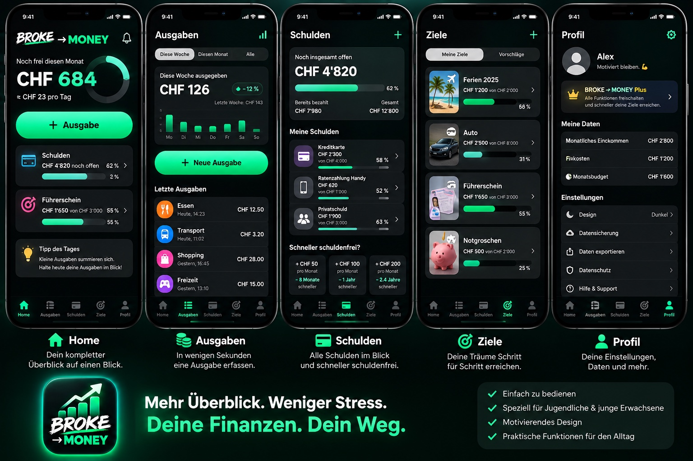
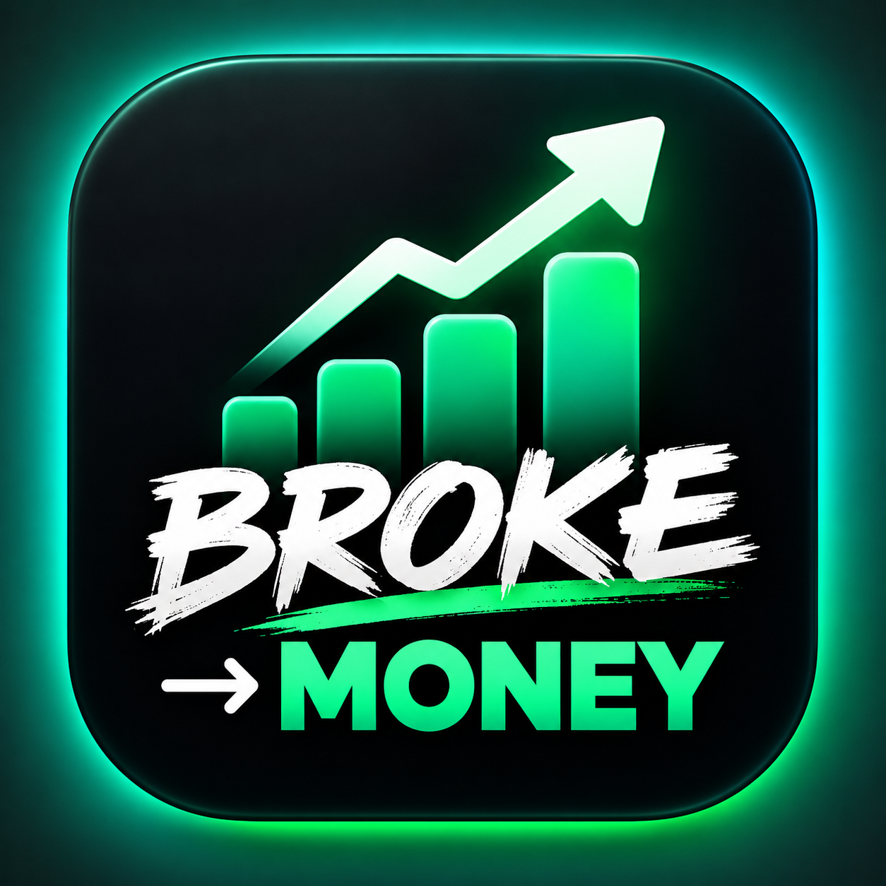

Mehr Überblick.
Weniger Stress.
Sieh in Sekunden, wie viel Geld dir noch bleibt, behalte deine Schulden im Blick und erreiche deine Sparziele – ohne Tabellen und ohne komplizierte Finanzsprache.
BROKE → MONEY entdeckenSo einfach funktioniert BROKE → MONEY.
Alles Wichtige auf fünf klaren Screens: Überblick, Ausgaben, Schulden, Ziele und Profil.

In wenigen Sekunden erfassen und sofort wissen, wo dein Geld bleibt.
Alles an einem Ort und sichtbar machen, wie du Schritt für Schritt vorankommst.
Führerschein, Ferien oder Notgroschen: Fortschritt einfach verfolgen.
Keine Excel-Tabellen. Keine Fachbegriffe. Nur das, was du wirklich brauchst.
Deine Finanzen. Dein Weg.
BROKE → MONEY soll Finanzplanung so einfach machen, dass du sie tatsächlich benutzt. Ein klarer Überblick, schnelle Eingaben und motivierender Fortschritt.

Bald im App Store.
Die erste Version von BROKE → MONEY befindet sich in Entwicklung.